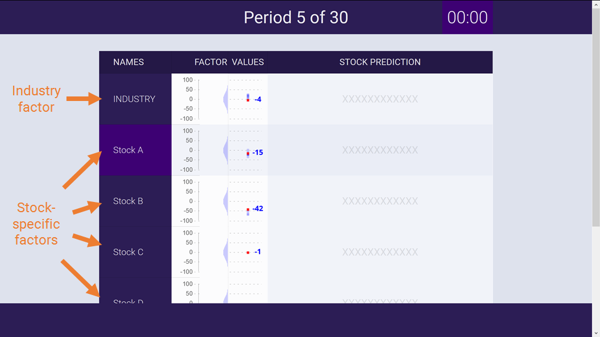
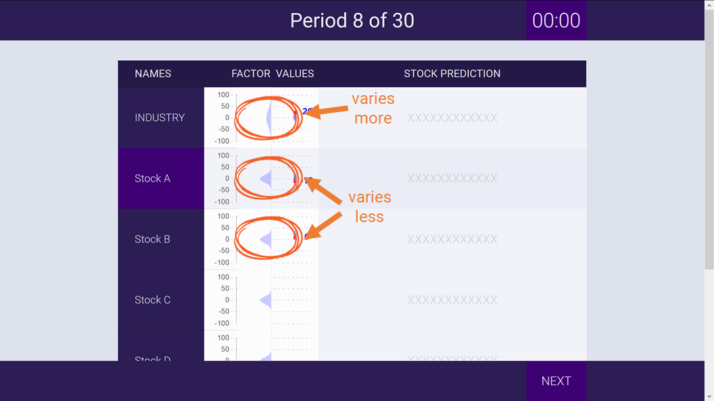
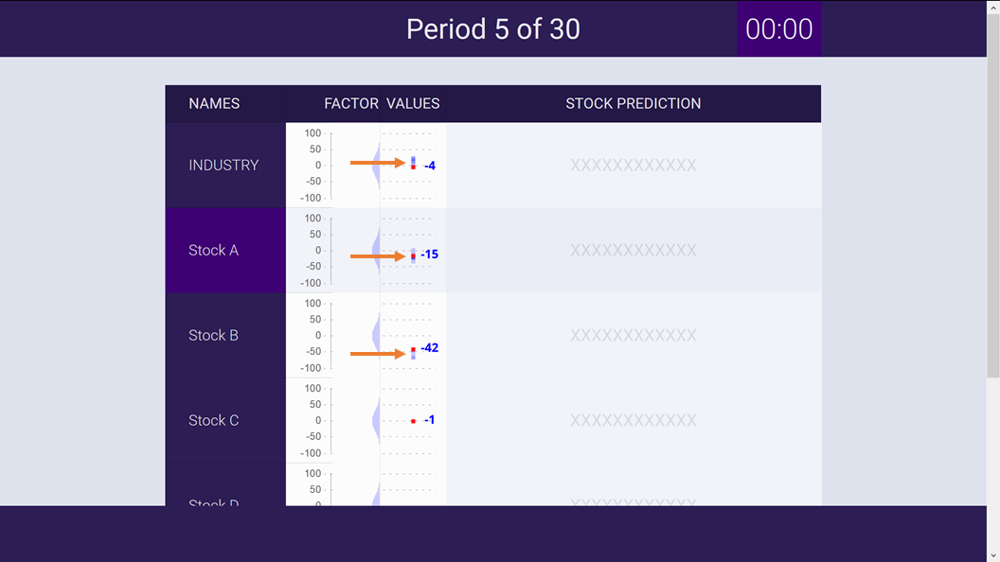
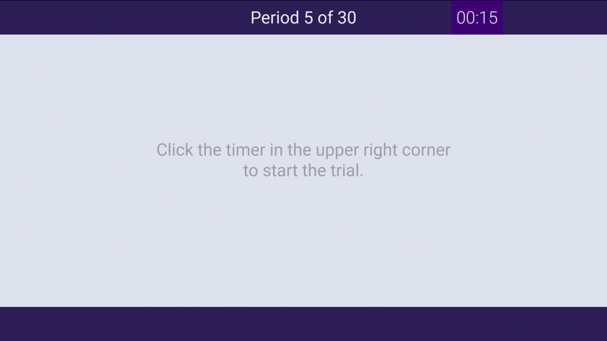
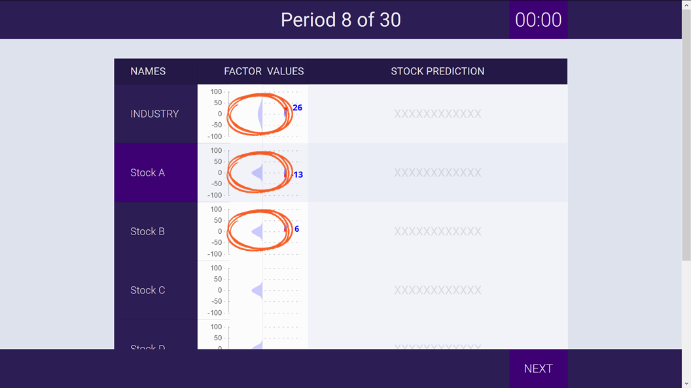
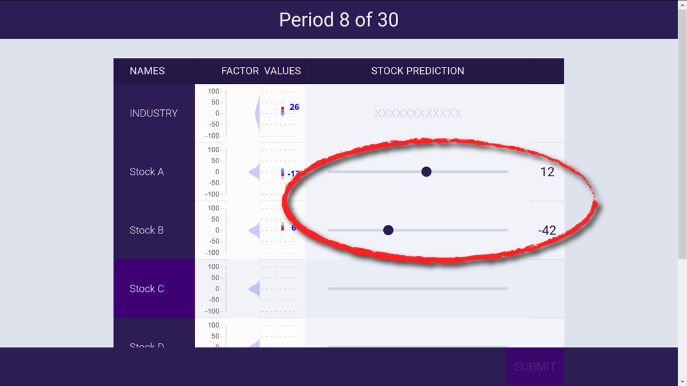
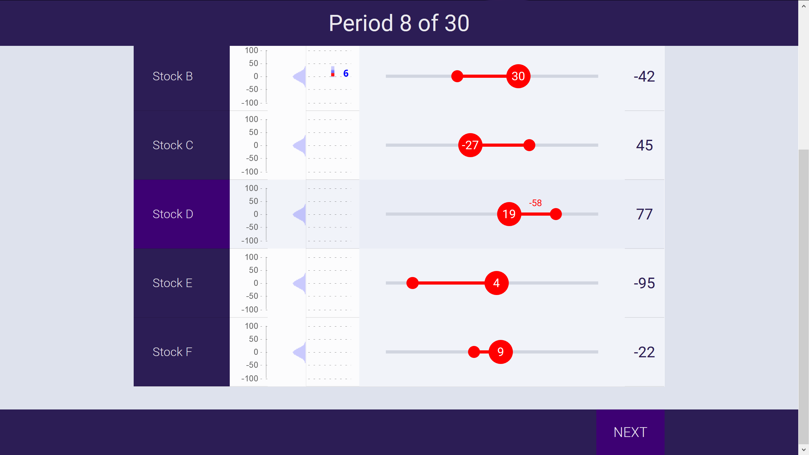

<!DOCTYPE html>
<html>
	<head>
	<meta charset="UTF-8">
		<title>Stock Prediction Game</title>
		<link href="jspsych-5.0.3/css/jspsych.css" rel="stylesheet" type="text/css"></link>
		<link href="https://fonts.googleapis.com/css?family=Roboto:100,300,400,500,700,900" rel="stylesheet">
		<link rel="stylesheet" href="https://ajax.googleapis.com/ajax/libs/jqueryui/1.12.1/themes/smoothness/jquery-ui.css"></link>
		<script src="https://ajax.googleapis.com/ajax/libs/jquery/1.11.1/jquery.min.js"></script>
		<script src="jspsych-5.0.3/jspsych.js"></script>
		<script src="jspsych-5.0.3/plugins/jspsych-payment.js"></script>
		<script src="jspsych-5.0.3/plugins/jspsych-view.js"></script>
		<script src="jspsych-5.0.3/plugins/jspsych-forecast.js"></script>
		<script src="jspsych-5.0.3/plugins/jspsych-html.js"></script>
		<script src="jspsych-5.0.3/plugins/jspsych-instructions.js"></script>
		<script src="jspsych-5.0.3/plugins/jspsych-text.js"></script>
		<script src="jspsych-5.0.3/plugins/jspsych-text-payment.js"></script>
		<script src="jspsych-5.0.3/plugins/jspsych-survey-text-relabel.js"></script>
		<script src="jspsych-5.0.3/plugins/jspsych-survey-text-relabel-required-number-mintime.js"></script>
		<script src="jspsych-5.0.3/plugins/jspsych-survey-multi-choice.js"></script>
		<script src="https://ajax.googleapis.com/ajax/libs/jqueryui/1.12.1/jquery-ui.min.js"></script>
		<script src="Chart.js"></script>
		<script src="chartjs-plugin-datalabels.js"></script>
		<script src="https://code.jquery.com/jquery-1.12.4.js"></script>
		<script src="https://code.jquery.com/ui/1.12.1/jquery-ui.js"></script>

	</head>
	<body>
	</body>
	<script>

		var test_mode = true;
		var quick_mode = true;
		var exp_type = 2; // see treatments
		var treatments = ["variance", "size", "time"];
		var blocks = jsPsych.randomization.shuffle([0,1]); // block order

		// pick a random condition for the subject at the start of the experiment
		// var condition_assignment = jsPsych.randomization.shuffle(['conditionA', 'conditionB', 'conditionC'], 1)[0];

		//---------Set task parameters---------

		// Firm parameters in block 0 vs 1
		if (exp_type == 0) {
			var prior_std_I = [5, 30]; // standard deviation of industry factor prior
			var prior_std_S = [30, 5]; // standard deviation of stock-specific factor priors
			var n_firms = [5, 5]; // number of firms
			var names = [["INDUSTRY", "Stock A", "Stock B", "Stock C", "Stock D", "Stock E"], ["INDUSTRY", "Stock A", "Stock B", "Stock C", "Stock D", "Stock E"]]; // factor names
			var time_limit = [12*1000, 12*1000]; //number of (milli)seconds allowed
		} else if (exp_type == 1) {
			var prior_std_I = [30, 30]; // standard deviation of industry factor prior
			var prior_std_S = [5, 5]; // standard deviation of stock-specific factor priors
			var n_firms = [2, 8]; // number of firms
			if (n_firms[0] > n_firms[1]) { var n_firms = n_firms.reverse() }
			var names = [["INDUSTRY", "Stock A", "Stock B"], ["INDUSTRY", "Stock A", "Stock B", "Stock C", "Stock D", "Stock E", "Stock F", "Stock G", "Stock H"]]; // factor names
			var time_limit = [12*1000, 12*1000]; //number of (milli)seconds allowed
		} else if (exp_type == 2) {
			var prior_std_I = [30, 30]; // standard deviation of industry factor prior
			var prior_std_S = [5, 5]; // standard deviation of stock-specific factor priors
			var n_firms = [5, 5]; // number of firms
			var names = [["INDUSTRY", "Stock A", "Stock B", "Stock C", "Stock D", "Stock E"], ["INDUSTRY", "Stock A", "Stock B", "Stock C", "Stock D", "Stock E"]]; // factor names
			var time_limit = [20*1000, 8*1000]; //number of (milli)seconds allowed
		}

		var prior_mean = [Array(n_firms[0]+1).fill(0), Array(n_firms[1]+1).fill(0)];
		var prior_std = [Array(n_firms[0]+1).fill(prior_std_I[0]).fill(prior_std_S[0],1), Array(n_firms[1]+1).fill(prior_std_I[1]).fill(prior_std_S[1],1)];

		// Practice parameters
		var practice_n_firms = 5;
		var practice_names = ["INDUSTRY", "Stock A", "Stock B", "Stock C", "Stock D", "Stock E"]
		var practice_prior_mean = Array(practice_n_firms+1).fill(0);
		var practice_prior_std = [[8, 30, 30, 30, 30, 30], [30, 8, 8, 8, 8, 8]];
		var practice_factors = [[10, 50, 25, 0, -25, -50], [-30, -10, -2, 0, 2, 10]];

		// Timing/NPR parameters
		var npr_frequency = 0.5*1000; //(milli)seconds per npr
		var error_std = 10; //standard deviation of npr errors

		// Reward parameters
		var a = 6;
		//var b = 1/300;
		var b = 1/200;

		// History parameters
		var n_periods = 20; // number of periods, should be even
			if (quick_mode) { var n_periods = 2; }
		var practice_n_periods = 2; // number of practice periods
		
		// Write practice history
		var practice_histories = [];
		for (var i = 0; i < practice_n_periods; i++) {
			practice_histories.push([]);
			for (var j = 0; j < practice_n_firms + 1; j++) {
				//x = Math.round(normal(practice_prior_mean[j], practice_prior_std[i][j]));
				x = practice_factors[i][j];
				practice_histories[i].push(x);
			}
		}

		// Write history [period][firm]
		var histories = [];
		for (var i = 0; i < n_periods; i++) {
			histories.push([]);
			if (i < n_periods/2) {
				for (var j = 0; j < n_firms[blocks[0]] + 1; j++) {
					x = Math.round(normal(prior_mean[blocks[0]][j], prior_std[blocks[0]][j]))
					histories[i].push(x); }
			} else {
					for (var j = 0; j < n_firms[blocks[1]] + 1; j++) {
					x = Math.round(normal(prior_mean[blocks[1]][j], prior_std[blocks[1]][j]))
					histories[i].push(x); }
			}
		}
		
		// Randomize order of rows
		var random_order_stocks_practice = []; var random_order_stocks_0 = [];	var random_order_stocks_1 = [];
		for (var j = 0; j < practice_n_firms + 1; j++) random_order_stocks_practice.push(j);
		for (var j = 0; j < n_firms[0] + 1; j++) random_order_stocks_0.push(j);
		//for (var j = 0; j < n_firms[1] + 1; j++) random_order_stocks_1.push(j);
		//var random_order_stocks = jsPsych.randomization.shuffle(random_order_stocks); //shuffle order completely
		var practice_random_order_stocks = randomize_0(random_order_stocks_practice);
		if (exp_type == 1) {
			//randomize separately across blocks
			//var rand_order_0 = randomize_0(random_order_stocks_0);
			//var rand_order_1 = randomize_0(random_order_stocks_1);
			//var random_order_stocks = [ rand_order_0, rand_order_1 ];
			//randomize keeping order same
			var rand_order = randomize_0(random_order_stocks_0);
			for (var j = 0; j < n_firms[1] + 1; j++) random_order_stocks_1.push(j);
			for (var j = 0; j < n_firms[0] + 1; j++) { random_order_stocks_1[j] = rand_order[j]; }
			var random_order_stocks = [ rand_order, random_order_stocks_1 ];
		} else {
			var rand_order = randomize_0(random_order_stocks_0);
			var random_order_stocks = [ rand_order, rand_order ];
		}

		// generate a random subject ID with 8 characters
		var subject_id = "" + exp_type + Math.floor(Math.random()*10000000);

		// record the condition assignment in the jsPsych data
		// this adds a property called 'subject' and a property called 'condition' to every trial
		jsPsych.data.addProperties({
		  subject: subject_id,
		  npr_frequency: npr_frequency,
		  error_std: error_std,
		  payoff_a: a,
		  payoff_b: b,
		  n_periods: n_periods,
		});


	//---------Create instructions---------

	var style_instructions = [
			"<p style='text-align:center'>Welcome to the Stock Prediction Game!</p>" + //"<p style='text-align:center'></img></p>" + 
			"<p>In this game, you have to guess the values of stocks based on a stream of incoming information. The closer your guesses are to the actual numbers, the more money you will earn!</p>" + "<p>Please close as many other tabs and windows as possible, and make your browser window full screen (in some browsers this is done by hitting F11). Read the following instructions carefully! It will help you earn more money.</p><p>People who pay attention to this task earn over twice as much money as people who don't.</p><p>Please stay engaged during this task. If you need to take breaks, there are opportunities to do so between each period.</p>",
			"<p style='text-align:center'></img></p>" + "<p>This game has " + n_periods + " periods. In each period, you will be shown information about several 'factors' that determine the values of various stocks. There is a specific factor for each stock, and there is one additional factor that describes the industry all of the stocks are in. (These could be shown in a different order than in the image, but that doesn't change anything about what they mean.)</p>",
			"<p style='text-align:center'></img></p>" + "<p>Across periods, each factor might vary a lot or a little. This is indicated by the sideways bell curves, which can be wider (if the true factor values could be very big) or narrower (if they are likely close to zero).</p>" + "<p>What happens in one period has no effect on what happens in any other period.</p>",
			"<p style='text-align:center'></img></p>" + "<p>Your task in each period is to predict the total value of each stock. This is equal to its stock-specific factor plus the industry factor.</p>" + "<p>For example, if the industry factor were 10 and the stock-specific factors for A and B were &#8722;16 and &#8722;53, then the total values of Stocks A and B would be &#8722;6 (= &#8722;16 + 10) and &#8722;43 (= &#8722;53 + 10).<br>(Note: you will not make a prediction about the industry factor on its own, but it will contribute to each stock's total value.)</p>" + "<p>However, you will not be given the exact factor values, and instead have to learn about them.</p>",
			"<p style='text-align:center'></img></p>" + "<p>You have a limited amount of time to learn about the factors. You learn about a factor by mousing over it. The longer your mouse is over a factor, the more information about it you will see.</p>" + "<p>The pieces of information you receive don't tell you the true factor value exactly, but they are useful clues. Their average is equal to the true factor value. To improve your predictions, you may decide to gather a lot of information about some factors, and a little information (or even none at all) about others.</p>",
			// "<p style='text-align:center'></img></p>" + "<p>Across periods, each factor might vary a lot or a little. (Note: this is different from the moment-to-moment randomness in the pieces of information you receive.) This is indicated by the sideways bell curves, which can be wider (if the true factor values could be very large) or narrower (if they are likely to be small).</p>" + "<p>What happens in one period has no effect on what happens in any other period.</p>",
			"<p style='text-align:center'></img></p>" + "<p>When the timer runs out in each period, you will predict the total value of each stock, using the sliders on the right. When all of your predictions have been made, click the submit button in the bottom right.</p>",
			"<p style='text-align:center'></img></p>" + "<p>After submitting your predictions, you will be shown the true stock values in that period. Mousing over each row will tell you exactly how big your errors were. (Positive numbers mean that the true value was higher than your guess; negative numbers mean that the true value was lower than your guess.)</p>" + "<p>The amount you earn will be paid to you as a bonus at the end of the experiment. Your earnings depend on the accuracy of each guess in the experiment. You will be penalized especially when your guesses are really far off.</p>" + "<p>For example, if all your guesses were perfectly accurate (zero error), you would earn $" + a.toFixed(2) + ".<br>If all your guesses were off by 10, you would earn $" + a.toFixed(2) + " minus $" + (b*(10**2)).toFixed(2) + ".<br>If all your guesses were off by 20, you would earn $" + a.toFixed(2) + " minus $" + (b*(20**2)).toFixed(2) + ".<br>If all your guesses were off by 30, you would earn $" + a.toFixed(2) + " minus $" + (b*(30**2)).toFixed(2) + ".<br>If you are too inaccurate, you may end up earning no bonus money.</p>", // + "<p>For example, you would earn $" + a.toFixed(2) + " if you were perfectly accurate in every period (zero error).<br>You would earn approximately $" + (a-1).toFixed(2) + " if your average error were " + Math.round(Math.sqrt(1/b)) + ".<br>You would earn approximately $" + (a-2).toFixed(2) + " if your average error were " + Math.round(Math.sqrt(2/b)) + ".<br>You would earn approximately $" + (a-3).toFixed(2) + " if your average error were " + Math.round(Math.sqrt(3/b)) + ".</p>"
			"<p>You will now get " + practice_n_periods + " practice trials. They are self-paced, and will not have any impact on your earnings. When you are ready to start the practice trials, click 'Next'.</p>" + "<p>If you want the display to be larger, you can zoom in with your web browser during the practice trials. Depending on your browser and operating system, this might be done by hitting 'Ctrl' and '+' at the same time, or 'Cmd' and '+'. (You can do the opposite with 'Ctrl' + '&#8722;'.)</p>",
			];

		var instructions_block = {
			type: "instructions",
			pages: style_instructions,
			show_clickable_nav: true,
			allow_keys: false,
			data: { stage: "instructions" },
		}

		//write instructions in practice trials
		function style_practice_instruction_fn(factors, t) {
		return "This is a self-paced practice trial. The true factor values are:<br>INDUSTRY: " + factors[t][0] + "<br>Stock A: " + factors[t][1] + "<br>Stock B: " + factors[t][2] + "<br>Stock C: " + factors[t][3] + "<br>Stock D: " + factors[t][4] + "<br>Stock E: " + factors[t][5] + "<br>Remember, each stock's total value is its stock-specific factor plus the industry factor."
		}

		function style_practice_view_instruction_fn(factors, t) {
			return style_practice_instruction_fn(factors, t) + "<br>Mouse around the chart to get used to the interface. Click 'Next' when you are ready to proceed."
		}

		function style_practice_forecast_instruction_fn(factors, t) {
			return style_practice_instruction_fn(factors, t) + "<br>Click on the sliders to make your predictions. Click the 'Submit' button once you have made all your predictions."
		}

		var comprehension_block = {
				type: "survey-multi-choice",
				required: [ true, true ],
				preamble: "Please answer the following questions:",
				questions: [ "If the industry factor is &#8722;8, and the stock-specific factor for A is 30, what is the total value of stock A?", "If the industry factor is 10, the stock-specific factor for A is &#8722;15, and the stock-specific factor for B is 5, what is the total value of stock A?" ],
				options: [ [ "30", "38", "-8", "22" ], [ "10", "15", "-5", "-15" ] ],
				data: { stage: "comprehension" },
		};

    	var style_instructions_postpractice = [ "<p style='text-align:center'>The real task will now begin! Remember you have a time limit! Click 'Next' when you are ready!</p>" ]

		var instructions_block_postpractice = {
			type: "instructions",
			pages: style_instructions_postpractice,
			show_clickable_nav: true,
			allow_keys: false,
			data: { stage: "instructions" },
		}

		var style_instructions_between_blocks = [ "<p style='text-align:center'>The second set of periods will now begin! Some things may have changed. Click 'Next' when you are ready!</p>" ]

		var instructions_between_blocks = {
			type: "instructions",
			pages: style_instructions_between_blocks,
			show_clickable_nav: true,
			allow_keys: false,
			data: { stage: "instructions" },
		}

		//---------Misc functions---------
		
		// Function to generate random normal numbers
		function normal(mean, std) {
			mean = mean || 0;
			std = std || 1;

			var u = 0, v = 0;
			while(u === 0) u = Math.random(); //Converting [0,1) to (0,1)
			while(v === 0) v = Math.random();
			return mean + std * Math.sqrt( -2.0 * Math.log( u ) ) * Math.cos( 2.0 * Math.PI * v );
		}

		// Functions to randomize order
		function randomize_0 (arr) {
			var out = [];
			var pos = jsPsych.randomization.shuffle(arr)[0];
			for (i = 0; i < arr.length; i++) {	if (i < pos) { out.push(arr[i+1]) } else if (i == pos) { out.push(arr[0]) } else { out.push(arr[i]) } }
			return out
		}

		//---------Misc blocks---------
		
		// Consent block
		var check_consent = function(elem) {
			if ($('#consent_checkbox').is(':checked')) {
				return true;
			}
			else {
				alert("If you wish to participate, you must check the box.");
				return false;
			}
			return false;
		};
		
		var consent_block = {
				type:'html',
				url: "consent-forecast.html",
				cont_btn: "start",
				check_fn: check_consent
		};
		
		// Strategy block
		var strategy_block = {
				type: "survey-text-relabel",
				questions: [ "Did you follow a strategy in this task? Did you differentiate between the types of blocks?" ],
				data: { stage: "strategy" },
		};

		// Comments block
		var comment_block = {
				type: "survey-text-relabel",
				questions: [ "Do you have any comments for us about this task?" ],
				data: { stage: "comment" },
		};
		
		// Age block
		var age_block = {
				type: "survey-text-number",
				questions: [ "What is your age (in years)?" ],
				data: { stage: "age" },
		};

		// Worker ID block
		var worker_id_input = {
				type: "survey-text-relabel",
				questions: ["Please input your Mturk Worker ID so that we can pay you the appropriate bonus. Your ID will not be shared with anyone outside of our research team."],
				data: { stage: "idpay" },
		}

		// Bonus block
		//define function for calculating total bonus
		function roundFloat(y,x) { return (Math.floor(y/x) * x).toFixed(2) };
 		function getSubjectData() {
 			var test_outcomes = jsPsych.data.getTrialsOfType('forecast');
 			// console.log(test_outcomes)
 			var total_err = 0;
 			if (!quick_mode) { var start_pay = practice_n_periods; } else { var start_pay = 0; }
 			for (i = start_pay; i < start_pay + n_periods; i++) { 
 				total_err += Math.min(test_outcomes[i].errorSum, a/b);
 			}
 			return roundFloat(a - b*total_err/n_periods, 0.0001)
		}
		
		var bonus_block = {
				type: "text",
				text: function() {
						var total_bonus = getSubjectData();
		                jsPsych.data.addDataToLastTrial({"total_bonus": total_bonus});
						return "<p class='center-content'> You won a bonus of <strong>$" + total_bonus + ".</strong></p>"+
		                        "<p class='center-content'> Press any key to finish the experiment and receive your completion code. Thank you for participating!</p>";
		                },
		};

		// Debriefing block
		var debrief_block = {
				type: 'html',
				url: 'debrief.html',
				cont_btn: "Continue"
		};

		// function to save data (includes MTurk completion code link)
		function saveData(filename, filedata){
			$.ajax({
				type:'post',
				cache: false,
				url: 'save_data.php', // this is the path to the above PHP script
				data: {filename: filename, filedata: filedata},
				complete: function() {
					window.location.href = "confirmation_code_H2C.html";
				}
			});
		}

		//-------Main task blocks

		var timeline = [];

		if (!quick_mode) {
			timeline.push(consent_block);
			timeline.push(instructions_block);
		}
		
		// Loop through practice periods
		for (var t = 0; t < practice_n_periods; t++) {

				var practice_view_trial = {
					type: "view",
					period: t,
					n_periods: practice_n_periods,
					n_firms: practice_n_firms,
					names: practice_names,
					// total_time: time_limit,
					prior_mean: practice_prior_mean,
					prior_std: practice_prior_std[t],
					next_period_realizations: practice_histories[t],
					next_button: true,
					error_std: error_std,
					error_mean: 0,
					table_header: true,
					frequency: npr_frequency,
					random_order_stocks: practice_random_order_stocks,
					yMax: 100,
					yMin: -100,
					instructions: style_practice_view_instruction_fn(practice_factors, t),
					data: { stage: "view_practice" },
				};

				var practice_forecast_trial = {
					type: "forecast",
					period: t,
					n_periods: practice_n_periods,
					n_firms: practice_n_firms,
					names: practice_names,
					// total_time: 60*1000,
					prior_mean: practice_prior_mean,
					prior_std: practice_prior_std[t],
					next_period_realizations: practice_histories[t],
					slider_min: -120,
					slider_max: 120,
					table_header: true,
					feedback: true,
					random_order_stocks: practice_random_order_stocks,
					// forecast_industry: true,
					instructions: style_practice_forecast_instruction_fn(practice_factors, t),
					yMax: 100,
					yMin: -100,
					data: { stage: "forecast_practice" },
				};

			if (!quick_mode) {
				timeline.push(practice_view_trial);
				timeline.push(practice_forecast_trial);
			}

		}

	if (!quick_mode) {
		timeline.push(comprehension_block)
		timeline.push(instructions_block_postpractice);
	}

		// Loop through real periods
		for (var t = 0; t < n_periods; t++) {

				if (t < n_periods/2) { bl = blocks[0] } else if (t >= n_periods/2) { bl = blocks[1] };

				if (t == n_periods/2)  { timeline.push(instructions_between_blocks) };

				var view_trial = {
					type: "view",
					period: t,
					n_periods: n_periods,
					n_firms: n_firms[bl],
					names: names[bl],
					total_time: time_limit[bl],
					prior_mean: prior_mean[bl],
					prior_std: prior_std[bl],
					next_period_realizations: histories[t],
					next_button: false,
					error_std: error_std,
					error_mean: 0,
					table_header: true,
					frequency: npr_frequency,
					random_order_stocks: random_order_stocks[bl],
					yMax: 100,
					yMin: -100,
					instructions: "",
					data: { stage: "view_real" },
				};

				var forecast_trial = {
					type: "forecast",
					period: t,
					n_periods: n_periods,
					n_firms: n_firms[bl],
					names: names[bl],
					// total_time: 60*1000,
					prior_mean: prior_mean[bl],
					prior_std: prior_std[bl],
					next_period_realizations: histories[t],
					slider_min: -120,
					slider_max: 120,
					table_header: true,
					feedback: true,
					random_order_stocks: random_order_stocks[bl],
					// forecast_industry: true,
					instructions: "",
					yMax: 100,
					yMin: -100,
					data: { stage: "forecast_real" },
				};

				timeline.push(view_trial);
				timeline.push(forecast_trial);

		}

	//if (!quick_mode) {
		timeline.push(strategy_block);
		timeline.push(comment_block);
		timeline.push(age_block);
		timeline.push(worker_id_input);
	//	}
		timeline.push(bonus_block);
		timeline.push(debrief_block);


		//---------Run the experiment---------
		
		//Initiate the experiment
		jsPsych.init({
			timeline: timeline,
			on_finish: function(){ //Execute this when the experiment finishes
				if (test_mode == true) { jsPsych.data.displayData() } else { saveData(subject_id + '.csv', jsPsych.data.dataAsCSV()) }
			}
		})

</script>
</html>
